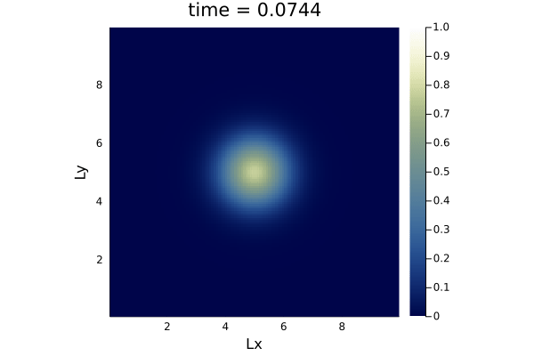

Agenda
📚 acoustic wave propagation, 1D to 2D
💻 Personal Julia install, Julia'sProjectenvironment, Julia's package manager
🚧 Exercises:
acoustic 2D (3 implementations)
Earthquakes and seismic P-waves
👉 get started with exercises
The wave equation
The diffusion equation
Spatial discretisation: 1D and 2D
Finite-differences and staggered grids
The wave equation is a second-order partial differential equation.

The wave equation is a second-order linear partial differential equation for the description of waves—as they occur in classical physics—such as mechanical waves (e.g. water waves, sound waves and seismic waves) or light waves. Wikipedia
The hyperbolic equation reads
where
is pressure, displacement (or another scalar quantity)
a non-negative real constant (speed of sound, stiffness, ...)
The wave equation can be elegantly derived, e.g., from Hooke's law and second law of Newton considering masses interconnected with springs.
where is the mass, de spring stiffness, and , the oscillations of the masses (small distances). The acceleration can be substituted by the second derivative of displacement as function of time , , while balancing and taking the limit leads to .
Note on classification of PDEs:
Elliptic:
(e.g. steady state diffusion, Laplacian)Parabolic:
(e.g. transient heat diffusion)Hyperbolic:
(e.g. wave equation)
The the first objective of this lecture is to implement the wave equation in 1D (spatial discretisation) using an explicit time integration (forward Euler) as seen in lecture 2 for the advection-diffusion-reaction physics.
Also, we will consider acoustic or pressure waves. We can thus rewrite the wave equation as
where
is pressure
is the speed of sound
Our first task will be to modify the diffusion equation from lecture 2 ...

... in order to obtain and implement the acoustic wave equation

We won't implement first the hyperbolic equation as introduced, but rather start from a flux/update formulation, as we used to implement for the diffusion equation.
To this end, we can rewrite the second order wave equation
as two first order equations
One can even push the analogy one step further, defining a flux of "momentum" as
using it to update velocity
before computing the mass balance (conservation law or divergence of fluxes)
This formulation is very similar to the diffusion equation, as the only addition is the time-dependence (or history) in the fluxes:
Let's get started with this. We will do this exercise in a Julia standalone script and run it in from the REPL using the local Julia install.
It's time to launch Julia on your computer 🚀
👉 Download the diffusion_1D.jl script to get you started
We can start modifying the diffusion code's, adding ρ and K and changing ttot=20 in # Physics, and taking a Gaussian (centred in Lx/2, σ=1) as initial condition for the pressure P
# Physics
Lx = 10.0
ρ = 1.0
K = 1.0
ttot = 20.0
# Derived numerics
P = exp.(.-(xc .- Lx/2).^2)Note that the time step needs a new definition: dt = dx/sqrt(K/ρ)/2.1
Then, the diffusion physics:
qx .= .-D.*diff(C )./dx
dCdt .= .- diff(qx)./dx
C[2:end-1] .= C[2:end-1] .+ dt.*dCdtShould be modified to account for pressure P instead of concentration C, the flux update (Vx) added, and the coefficients modified:
qx .= .-1.0/ρ.*diff(P )./dx
Vx .= Vx .+ dt.*qx
dPdt .= .- K.*diff(Vx)./dx
P[2:end-1] .= P[2:end-1] .+ dt.*dPdt👉 Download the acoustic_1D.jl script for comparison.
Comparing diffusive and wave physics, we can summarise following:
| Physics | 1D formulation |
|---|---|
| Diffusion | |
| Acoustic waves | |
Let's discuss how to implement the acoustic wave equation (and the diffusion equation from last week's material) in 2D.
We want the and axis to represent spatial extend, and solve in each grid point for the pressure or the concentration, for the acoustic and diffusion process, respectively.
But let's first look at the equation, augmenting the Table we just started to fill
| Physics | 1D formulation | 2D formulation |
|---|---|---|
| Diffusion | ||
| Acoustic waves | ||
For both physics
The fluxes which are directional or vector quantities have a new -direction component
The balance equation or divergence, now balances the sum of the fluxes from all dimensions
Let's get started first with the diffusion equation, then the wave equation (as homework).
Add -direction physics and numerics
Update time step definition
Update initial Gaussian condition
Initialise all new arrays
Update physics calculations in the time loop
Update plotting
You can make multi-statement lines for scalars:
Lx, Ly = 10.0, 10.0Take now the most restrictive condition, e.g.:
dt = min(dx, dy)/...Recall that we are using conservative finite-differences and thus a staggered grid.
For 2D grids, we will have to handle scalar quantity and two fluxes as depicted below, taking care about correct staggering:
You can use heatmap() function from Plots.jl, to plot e.g. C as function of the spatial coordinates xc and yc:
heatmap(xc, yc, C')note the transpose '
Use display() to force the display of the plot, e.g., in the time loop every nout.
More advanced implementation, one can define the plotting options and apply them in the heatmap() call:
opts = (aspect_ratio=1, xlims=(xc[1], xc[end]), ylims=(yc[1], yc[end]), clims=(0.0, 1.0), c=:davos, xlabel="Lx", ylabel="Ly", title="time = $(round(it*dt, sigdigits=3))")
display(heatmap(xc, yc, C'; opts...))That's how the 2D diffusion looks like:

Let's get started with 2D.
It's time to launch Julia on your computer 🚀
👉 Download the diffusion_1D.jl script to get you started
👉 Download the diffusion_2D.jl script.
https://docs.julialang.org/en/v1/stdlib/REPL/
julia starts the REPL, run julia --help to see options.
Pretty powerful REPL:
completion
history:
start typing + up-arrow
Ctrl-r
unicode completion
several sub-modes: shell, Pkg, help
they are displayed with a different prompt
shell mode in Windows, try: shell> powershell
Demo
Docs:
Powerful package manager:
installing, updating and removing packages
separate environments for separate projects
Demo
Take-home: make a separate Project for each of your projects/assignments!
Packages installed in your global environment are always available, thus useful for utility packages.
I have installed in my global environment:
Revise.jl – To load it at startup: mkdir -p ~/.julia/config/ && echo "using Revise" >> ~/.julia/config/startup.jl
BenchmarkTools.jl – Accurate timers for benchmarking, even quick fast running functions
IJulia.jl – The Julia Jupyter kernel. Needs to be installed globally.
Infiltrator.jl – A debugger. Pretty basic but works well without slowing down program execution (unlike Debugger.jl which has more features).
StatProfilerHTML.jl or ProfileView.jl – To be used with the built in Profile module. Displays nice flame graphs (probably does not work on the GPU)
👉 See Logistics for submission details.
The goal of this exercise is to:
Implement 2D wave equation
Consolidate the finite-difference discretisation
Familiarise with visualisation
In this first exercise, the goal is to repeat the steps we did in class with the diffusion codes going from the 1D to the 2D implementation.
Starting from the 1D acoustic wave equation we discussed in lecture 3, extend the 1D code to a 2D configuration. Use the same parameters for the -direction quantities.
Create a new Julia script acoustic_2D_v1.jl for this homework. The script should produce a heatmap() plot that update upon time steps, with labelled axes and physical time displayed as title.
Use nx = 128 and ny = 129 grid points.
nx ≠ny may prevent errors with staggering to occurRecord the pressure at position during the entire simulation and report it as a subplot (pressure as function of time).
👉 See Logistics for submission details.
The goal of this exercise is to:
Implement 2D wave equation
Consolidate the finite-difference discretisation
Familiarise with visualisation
In this second exercise, you will implement a more concise version of the 2D wave equation.
Start from the 2D wave equation code from exercise 1, and reformulat the physics calculation without the explicit definition of the terms; only use velocities and pressure .
Create a new Julia script acoustic_2D_v2.jl for this homework. The script should produce a heatmap() plot that update upon time steps, with labelled axes and physical time displayed as title.
Use nx = 128 and ny = 129 grid points and the same parameters as for exercise 1.
Create a 3-panels plot that shows the 2D pressure and the velocity fields, as well as the 1D cross section of the pressure field at .
👉 See Logistics for submission details.
The goal of this exercise is to:
Implement 2D wave equation
Consolidate the finite-difference discretisation
Familiarise with visualisation
In this third exercise, implement the wave equation as reported in the beginning of lecture 3,
where
is pressure,
a non-negative real constant, here the speed of sound.
Cross-check that and add c as new parameter to a # Derived physics section in the code.
The challenge here is to implement the second order time derivtive of the pressure .
Pold and P; in Pold you can store the values at time (it-1), while you can use the array P for holding current (it) pressure values and finally use both to predict Pnew (it+1)Create a new Julia script acoustic_2D_v3.jl for this homework. The script should produce a heatmap() plot that update upon time steps, with labelled axes and physical time displayed as title.
Use nx = 128 and ny = 129 grid points and the same parameters as for exercise 1 and 2.
👉 See Logistics for submission details.
The goal of this exercise is to:
Implement 2D wave equation
Record the signal on a synthetic seismic array
Train visualisation
In this last exercise, you will implement a synthetic wave propagation solver, to resolve seismic pressure (P-)wave propagation in a sandstone. You will deploy an array of synthetic geophones (receivers) and record the seismic signal.
Create a new Julia script acoustic_2D_v4.jl for this homework, starting from the code you developed for exercise 2.

Implement the following changes:
Change the domain extend to m, m (with origin located in the bottom left corner of the model)
For sandstone, set the elastic moduli GPa and the density Kg/m
Define a Gaussian function for the source at , with centre location at and at m below the surface. Use a standard deviation of m and an amplitude of Pa.
Run the experiment for a total sec
Set pressure values as P[:,end] .= P[:,end-1] in order to minimise boundary effects on the top boundary
You should obtain a similar output for your figure (try saving it as .png from within Julia)
In a second step,
Add 5 monitoring station located at ~ m below the ground between and m, distant from each other by m.
Record and store the pressure in each monitoring station throughout the entire simulation
For the first station (located at m), find the arrival time for which the pressure > 0.02 Pa
Knowing at which time the wave hit the first station, you can post-process and report following (as formatted output in the REPL or on a figure):
First wave arrival time (in s) at station m
Distance (∆_dist) the wave travelled
-location of the seismic source